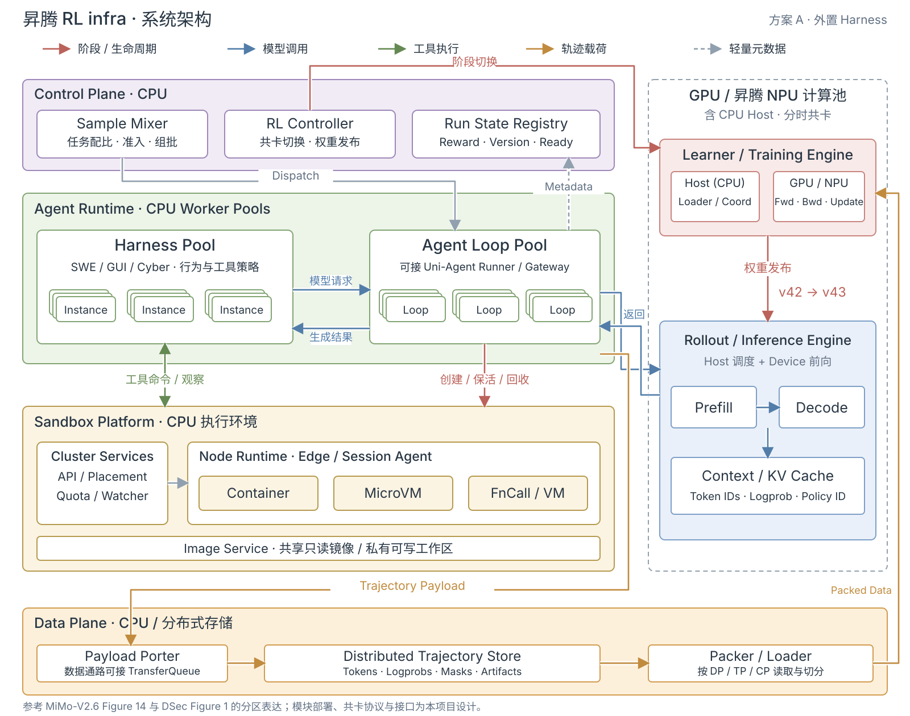
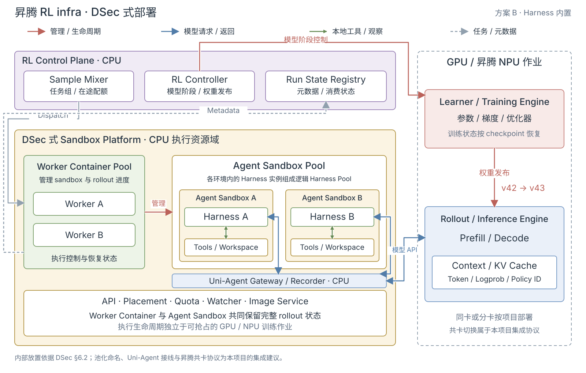
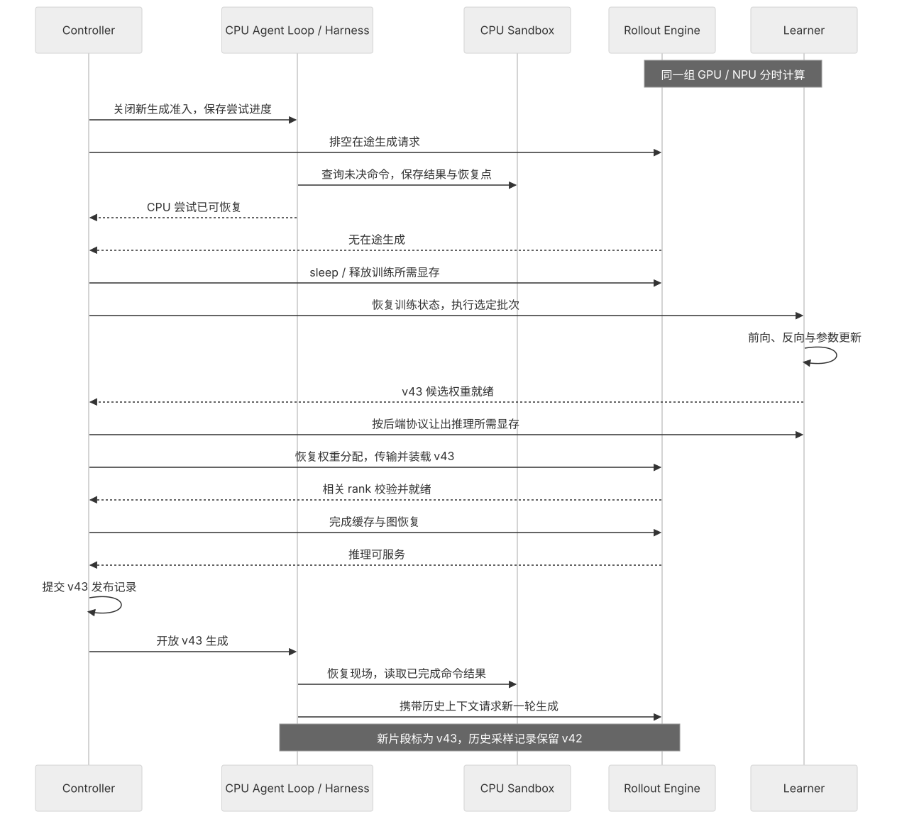

本文承接 D46 DSec 与 MiMo 基础设施 和 D47 910B 异步 RL。下文的拓扑、版本字段、切换协议和实验顺序均为面向本项目的实施设计。DeepSWE 实例中已有观察是开启 512 个沙箱时，部分环境的采样 CPU 用量低于 0.01 核；节点总体用量、峰值和采样窗口仍需复核。本文的 v42、v43 与题目组数字均用于解释机制。
00架构总览怎样读
大框划分职责与资源边界，小框表示模块，叠放方框表示一个池承载多个独立实例。实现可以将相邻的可信模块放在同一进程，按接口保持可替换性。先沿左侧 CPU 任务执行链路读图，再看右侧模型计算，最后沿底部数据面回到 Learner。

模块与连线
方案 A 采用外置 Harness。架构总览采用嵌套模块、池化实例和分类连线，将 CPU 控制面、Harness Pool、Agent Loop Pool、Sandbox Platform、轨迹数据面，以及共卡的 Learner 与 Rollout Engine 放在一张图中。红线表示阶段与生命周期控制，蓝线表示模型调用，绿线表示工具执行，橙线表示轨迹载荷，灰色虚线表示轻量元数据。沙箱后端按实际任务选择，共卡阶段由 Controller 协调。
分区表达参考 MiMo-V2.6 Figure 14 的控制面、数据面和执行池，以及 DSec Figure 1 的集群服务、节点运行时和后端展开方式。图中的组件部署、独立接口、资源布局与共卡协议属于本项目的集成设计，图中规模符号表示池化实例，实际容量由实验确定。MiMo Figure 14、DSec Figure 1
采用 DSec 路线时 Harness 放在哪里
DSec §6.2 描述，从 DeepSeek-V4.1 开始将 rollout 执行移到 DSec，并拆为 Worker Container 和 Agent Sandbox。Worker Container 管理沙箱，提供与具体 scaffold 解耦的 rollout 控制层；Agent Sandbox 承载 scaffold，例如 DeepSeek Harness，以及它的工具。两者都运行在可抢占 GPU 池之外，共同保留完整 rollout 状态。DSec §6.2

部署与状态
方案 B 将 Worker Container 与 Agent Sandbox 画进 Sandbox Platform 的 CPU 执行资源域，Harness 和工具位于各自的 Agent Sandbox 内。多个环境中的 Harness 实例在本报告中合称逻辑 Harness Pool。图中的池化名称、模型端点接线和昇腾共卡协议为项目集成映射，内部放置依据 DSec §6.2。
| 对象 | 按 DSec 路线的放置 | 职责 |
|---|---|---|
| Harness 实例 | Agent Sandbox 内 | 驱动 Agent 行为，使用本环境的工具和工作区 |
| Worker Container | DSec 上的独立执行容器 | 管理环境、执行进度和恢复协调 |
| 模型生成与学习计算 | GPU/NPU 作业 | 执行模型前向和训练更新 |
因此，Harness Pool 可以在平台的 CPU 执行资源域内，由多个 Agent Sandbox 中的实例组成。Harness 作为租户任务运行，平台的 API、调度与节点管理进程承担基础设施职责。CPU 资源域的归属、沙箱隔离边界和逻辑池化分别在图中表达。
MiMo 的 Harness Pool 描述多租户 Host 如何池化承载 Harness 与 Agent Loop；DSec 的上述安排描述 rollout 状态的部署与生命周期。将两者接起来时，需要明确每个实例落在哪个环境、由哪个 Worker 管理。DSec 的执行循环由 Worker 与 Agent Sandbox 共同承载，接入本报告的模型端会话、真实采样记录和数据面接口时，再逐项映射 Agent Loop 职责。MiMo §6.2
对已有、依赖本地文件系统和子进程的 Coding Harness，可以采用方案 B，把 Harness 直接运行在任务环境中，通过会话级模型端点调用共享推理引擎。工具的本地读写与测试在该环境完成；Worker 的外部执行接口用于启动、管理和恢复等操作。具体模型 Gateway 接线以及内部工具协议应按所用 Harness 实现确认。
下文的通用职责说明同时适用于两种方案，图 1 至图 3 以及操作示例采用方案 A 的外置接线。
上方控制面决定发什么任务以及何时切换设备
Sample Mixer 管任务供给，依据目标训练配比、各源耗时、组接受率和资源预算派发尝试。RL Controller 管训练与生成阶段，协调停止新生成、显存装卸、参数更新和权重发布。Run State Registry 保存组成员、尝试进度、奖励、策略版本、载荷引用和批次消费状态。三者配合后，调度器能够依据元数据判断训练条件，执行端能够查询自己的恢复位置。
图中 Dispatch 箭头将一次尝试交给 Agent Loop，向上的 Metadata 箭头汇报其进度和结果。Mixer 选好批次后，还要把组 ID、载荷引用和打包计划交给 Packer。该计划形成底部数据面读取哪些记录的依据。Controller 只有在生成已停止、训练批次已就绪且设备状态可切换时，才能进入训练阶段。
中间执行池将 Agent 行为与任务运行分别管理
Harness 根据提示、历史观察和上下文策略组织下一步请求，解析模型动作并选择工具。Agent Loop 为这次尝试提供模型端点，维护环境生命周期，记录实际输入输出 token、行为 logprob、策略版本和结束状态。它们通过双向蓝线完成一次模型调用，再通过绿线与执行环境交互。
| 模块 | 管理的核心状态 | 对外提供的能力 |
|---|---|---|
| Harness | 行为配置、上下文组织、待决动作 | 组织模型请求，选择工具，处理观察 |
| Agent Loop | 尝试身份、模型请求、轨迹记录、恢复位置 | 启动与恢复一次尝试，连接推理并导出训练记录 |
| Sandbox | 工作目录、进程、命令状态、环境租约 | 隔离执行、查询结果、保活、暂停和重置 |
这三个模块可以分别设计和替换。第一版可以让 Harness 与 Agent Loop 共用 CPU Worker，通过 Sandbox Adapter 访问独立执行服务。每条尝试的状态分别保留，常驻 Host 则复用代码、连接和事件循环。重连时，要把待决动作、模型请求和命令结果对齐到同一次尝试。
下方沙箱平台保留任务现场并调度真实执行
Cluster Services 管鉴权、配额、放置和节点状态，Node Runtime 管本机环境的生命周期与会话。普通 SWE 任务可先使用容器后端，再按隔离与功能要求引入 MicroVM 或其他后端。底层 Image Service 复用只读镜像，每次独立尝试保留私有可写工作区。
绿线表示命令和观察往返，红线表示创建、保活与回收等生命周期操作。一次模型生成期间，沙箱可以低资源驻留；测试运行期间，它可能短时占用较多 CPU 和 I/O。因此环境存活、普通工具执行和重测试应分别设配额。你观察到部分环境 CPU 低于 0.01 核，可以作为研究高密度驻留的起点，具体并发上限仍需结合节点内存、I/O 和执行峰值测量。
最终验收由可信 Verifier 管理，待测代码在隔离环境内执行。Verifier 的结果与载荷提交状态一起决定组是否就绪。中间测试日志用于指导 Agent，最终奖励按固定的任务与验证版本产生。
右侧模型计算池交替执行生成和训练
Rollout Engine 接收 Agent Loop 的模型请求，执行 prefill 与 decode，并返回生成 token 和采样记录。图中的两个计算框表示引擎内的计算阶段，Context / KV Cache 保存可复用的上下文计算状态，生成记录关联实际使用的策略版本。
Learner 通过主机侧 Loader 获取打包数据，在设备侧执行训练前向、反向与参数更新。Packed Data 箭头表示训练引擎接收数据，实际传输与预处理由 CPU 主机侧协调，再将需要的张量送入设备。显存中的参数、梯度和优化器状态由所选训练后端管理。
虚线大框表示这两套引擎分时共用同一批 GPU/NPU。生成窗口内，CPU 上多个 Agent 可以交错调用模型和工具；训练窗口内，具备运行条件的 CPU 工具与验证任务可以继续执行，新模型请求等待下一生成窗口。CPU 执行状态的连续性让切换时能够保留长任务的进度。
权重箭头表示 Controller 协调一次策略发布。v42 是此前可服务的策略快照，Learner 更新后准备 v43，相关推理 rank 装载并确认就绪后再开放生成。续采时保存历史上下文，按新权重重建所需 KV；每段实际生成的行为 logprob 和版本继续保留，以支持训练端处理跨版本轨迹。
底部数据面将执行记录变成训练输入
Payload Porter 接收轨迹载荷并返回引用，Distributed Trajectory Store 保存 token、行为概率、mask 和任务产物，Packer / Loader 根据批次计划读取并组织训练分片。这样，控制面可以按引用调度，大体积数据在生产侧与消费侧之间流转。
载荷成功提交后，状态库才能发布可读引用。完整组还需满足成员终态、奖励和数据规则，才能进入可消费队列。训练框架规定的组过滤、优势计算与打包步骤都要保持可追溯。消费记录与 learner checkpoint 协调保存，故障恢复时据此核对哪些更新已经完成。
沿一组修 Bug 任务走完闭环
- Mixer 派发同一道题的多次独立尝试，Agent Loop 分配身份、创建环境并启动 Harness。
- Harness 反复请求模型生成动作、让 Sandbox 执行命令并读取观察，Agent Loop 持续记录实际生成数据。
- 尝试结束后验收补丁并提交载荷。组满足训练规则后，Mixer 将其纳入批次，Packer 依计划读取数据。
- Controller 协调共卡切换，Learner 更新参数并准备新策略。发布完成后开放生成，尚未结束的尝试从保存的现场继续。
图中五类连线可以直接用于定位等待。模型等待时间长时，检查蓝线两端的请求队列、KV 和 prefill/decode；命令返回慢时，检查绿线两端的测试排队、CPU 和 I/O；learner 等数据时，沿 Metadata、组验收和橙色数据路径检查供给；阶段切换耗时高时，分别测量红线涉及的排空、显存装卸、权重传输与引擎恢复。
01四个模块分别运行在哪里
Sandbox 执行命令和保存工作区，Harness 组织 Agent 的提示、工具与行为，Rollout Engine 执行模型前向生成，Learner 执行训练计算。一次完整 rollout 还包含 CPU 上的多轮交互、环境等待和验证。推理引擎只是这段工作流中的模型计算部分。

操作关系
本图展示硬件部署建议。CPU 执行层可以先部署在现有节点，也可以独立扩容。加速服务器本身也有 CPU，Rollout 与 Learner 都有主机侧进程和设备侧计算。共卡表示它们轮流占用同一组设备，具体参数、梯度与优化器状态的驻留和卸载由训练后端管理。
普通 SWE 的文件编辑和 CPU 测试可以在 CPU 沙箱完成。需要 GPU/NPU 的算子或模型测试，可连接受配额管理的设备验收池，并记录设备、驱动和测试版本。若验收复用训练设备，就必须纳入同一个设备资源调度，测量其对训练的干扰。
Sandbox、Harness 与 Agent Loop 的独立模块边界
三者可以分别开发、测试和替换。建议先定义独立接口，在第一版把 Harness 与 Agent Loop 放在同一 CPU Worker，通过适配器访问 Sandbox Service。需要不同语言、依赖隔离或独立扩缩容时，再调整进程和节点部署。下图按外置 Harness 绘制。

操作关系
本图展示三个模块独立设计的架构建议。Agent Loop 控制尝试与环境生命周期，Harness 发起模型请求并选择工具，Sandbox 返回执行观察。Harness 与 Agent Loop 可以同进程部署，模型前向和训练计算在 GPU/NPU 上执行。
| 模块 | 回答的问题 | 建议接口 | 状态归属 |
|---|---|---|---|
| Harness | 下一步怎样完成任务 | start、handle_model_result、handle_tool_result、export_state | 行为配置、上下文组织、待执行动作与可恢复进度 |
| Agent Loop | 这次尝试怎样执行、记录与恢复 | run_episode、generate、checkpoint、resume、finalize | episode 身份、模型请求、实际采样记录、恢复点与结束状态 |
| Sandbox Service | 命令在哪里执行，现场如何保留 | create、exec、get_command、pause、resume、reset、destroy | 文件与进程、命令结果、环境修订与租约 |
操作时，Agent Loop 创建环境并把受限的模型端点和工具适配器交给 Harness。Harness 请求模型生成“运行测试”的动作，再调用 Sandbox 执行。Sandbox 将结果返回 Harness，后者组织下一轮上下文。Agent Loop 记录每次真实生成并管理最终验证和清理。工具适配器将命令及可见输出登记到统一事件记录，使用 episode_id、sandbox_id、generation_id 和 command_id 关联。
这里将 Agent Loop 定义为一次尝试的运行与记录外壳，Harness 封装具体 Agent 行为。若现有框架的 AgentLoop 已经实现 ReAct 决策循环，可以把 Harness 做成其行为插件，复用现有循环。框架中的同名组件应按实际职责映射。
模块间调用可通过函数、进程消息或 RPC 实现。控制器重连时，同时恢复 Harness 的待决动作、Agent Loop 的请求状态和 Sandbox 的命令状态。对仅支持整进程运行的现成 CLI，还需要进程保活或实际 checkpoint 能力；对话记录只能恢复其已记录的信息。环境执行可以继续时，训练窗口内的新模型请求进入等待队列，待已发布策略可服务后再放行。
MiMo 把 Harness 与 Agent Loop 分别池化，Payload Porter 通过分布式存储让调度器只处理轻量引用，Sample Mixer 维护混合任务训练配比。这些机制可分别借鉴到执行、传输与供数层。MiMo §6.1–6.3
02控制链路与数据链路怎样接起来
下面采用外置 Harness。它运行在可信 CPU Worker 内，通过远程执行接口操作沙箱。Agent Loop 为每次尝试管理生命周期与模型端点；Harness 根据模型输出决定下一次工具动作。实现可以把两者放在同一进程，接口上仍需明确所有权。

操作关系
本图展示集成架构建议。实线表示任务、调用与数据，虚线表示状态和阶段控制。镜像与环境工作区存储由 Sandbox Service 管理，轨迹存储由数据面管理，二者按不同访问模式规划。
| 接口 | 发出什么 | 接收方完成什么 |
|---|---|---|
| Mixer → Agent Loop | 题目、组 ID、尝试 ID、环境和 Harness 修订 | 建立可追溯的一次尝试 |
| Harness → 模型端点 | 当前上下文、采样参数、生成请求 ID | 路由到已发布策略并记录真实采样 |
| Harness → Sandbox | 命令 ID、参数、目录、超时 | 执行并保存可查询结果 |
| Agent Loop → Verifier | 补丁或最终产物引用、任务与验证修订 | 生成可信奖励与报告 |
| Porter → 状态库 | 已提交的载荷引用、大小、摘要 | 让调度器在数据可读后发布就绪状态 |
| Mixer → Packer | 选定组、长度、训练信号与载荷引用 | 构造当前 DP/TP/CP 布局需要的数据 |
| Controller → 引擎 | 阶段、目标策略版本、权重来源 | 完成切换并确认设备侧就绪 |
这些字段是内部接口语义示例。接入 verl 时，应优先映射现有 AgentLoop、rollout、训练后端和权重同步接口，避免建立重复的任务调度或生成服务。
首次启动按依赖顺序准备存储与状态库，启动 Sandbox Service，再启动带固定模型版本的 Rollout Engine 和 Learner 进程，完成设备显存管理与权重同步接线。随后启动 Agent Loop / Harness Host，将模型会话端点和 Sandbox Adapter 注入每次尝试。Controller 确认初始策略可服务后，Mixer 开始派发。Learner 进程可以等待训练窗口，设备侧训练状态按后端策略装卸。
03用一次修 Bug 的任务串起操作
假设题目 task-A 每组采样 K=8 次，组 ID 为 group-A。每次尝试拥有自己的 episode ID 和私有可写工作区，组内使用一致的任务、Harness 和验收配置。以下步骤是建议的运行顺序。
- Mixer 检查在途组、环境、推理 KV 和数据存储预算，接纳 group-A，逐项登记八次尝试。
- Agent Loop 申请环境租约并启动 Harness。Sandbox Service 使用指定镜像建立独立工作区，返回可执行的会话。
- Harness 将题目和工具定义发给模型端点。Rollout Engine 使用当前策略 v42 生成动作，记录输出 token 和实际行为 logprob。
- Harness 调用 read、edit、test 等工具。沙箱返回命令状态、输出和退出码，Harness 将可见结果纳入下一轮上下文。
- 尝试结束后提交补丁，可信 Verifier 执行最终验收。Agent 的自述和中间测试日志可辅助排查，最终奖励按指定验证流程产生。
- Porter 提交载荷，状态库登记引用与验证结果。失败重试通过独立 attempt ID 和原尝试关联，保持去重与审计。
- 八次尝试满足终态、载荷和奖励条件后，组过滤与训练信号计算决定该组是否可消费。正常解题失败也可能提供有效负样本；基础设施故障按预定规则重试或处理整组。
- Mixer 收集满足配比和滞后限制的组，生成 batch ID，Controller 协调进入训练窗口。
若使用分支或上下文压缩，一次尝试可能导出多个 Context。组成员按独立尝试计数，训练适配器要处理各 Context 的学习信号和重叠前缀计权。
Verifier 的控制进程与奖励记录保持可信，待测代码在隔离环境内执行。可以把最终补丁应用到干净的验证环境，使用受保护的测试与配置，减少 Agent 对原工作区验收逻辑的修改影响。具体采用哪种验证路径要固定在任务版本里，并计入验证资源预算。
04v43 是什么
v43 是示意性的策略发布编号，代表一份已经装载并允许生成的模型权重快照。在例子里，Learner 从 v42 对应的参数继续更新，准备出下一份权重，Controller 完成发布后将其标为 v43。数字 43 与模型品牌、参数量、GPU 编号和工具轮次分别使用不同字段表示。
一次发布可以包含一个或多个 optimizer step，也可以因为恢复、验证或发布频率而跳过若干训练步。系统需要同时记录训练进度、发布版本和引擎实例。重启后重新加载同一份权重，可以沿用原策略 ID，并分配新的实例 ID。
| 字段 | 示例 | 作用 |
|---|---|---|
| run_id | rl-run-A | 区分独立训练运行 |
| policy_id | rl-run-A/p43 | 标识不可变的已发布策略 |
| parent_policy_id | rl-run-A/p42 | 追踪权重来源 |
| optimizer_step | 1200 | 记录真实训练进度，数值为示例 |
| weights_digest | 权重清单摘要 | 校验目标权重制品或分片清单 |
| inference_config_digest | tokenizer、模板、量化等配置摘要 | 标识影响生成行为的推理配置 |
| publication_state | PREPARING / COMMITTED | 区分准备中和可服务状态 |
这些是本项目建议字段。权重重切分或量化后，各 rank 校验应使用对应分片与转换配置；训练权重文件的摘要无法直接替代转换后推理张量的校验。跨版本统计按同一 run 的发布序号和 lineage 计算，回滚与分支需要另行处理。
05共卡时怎样从 v42 切到 v43
操作关系
本图展示共卡操作协议。第一版选择排空当前生成请求，在工具轮次之间续接。长解码可增加经验证的中断与续接机制。排空生成的等待、设备卸载、训练状态恢复、权重传输和推理恢复应分别计时。
vLLM-Ascend 官方文档描述同卡的 sleep mode 与 IPC 权重传输，以及分卡的 HCCL 传输。Level 2 sleep 会丢弃权重和 KV，恢复顺序为权重分配、装载新权重、KV 分配。额外清理可能增加 HCCL 和图恢复成本。具体调用顺序需与训练框架的显存与权重生命周期配合。vLLM-Ascend RL 文档
阶段门禁覆盖所有共享设备的参与进程。状态库先登记 PREPARING；相关 rank 和引擎恢复完成后提交 COMMITTED，Gateway 才接纳新请求。若传输中断，则保持生成关闭，通过完整目标权重或已知 checkpoint 恢复。重试发布使用相同目标 ID，避免产生不可追溯的中间版本。
06跨步之后保留哪些状态
假设 group-A 有七次尝试完成，第八次正在执行测试。其他完整组已经足够训练时，可以保留 group-A，在下一生成窗口继续。以下采用整组验收与消费规则，超时、基础设施失败和组淘汰策略在实验前固定。
| 状态 | 所有者 | 跨步处理 |
|---|---|---|
| 对话、上下文谱系、下一步动作 | Agent Loop 与 Harness | 保存恢复点，模型请求在新窗口重发 |
| 代码修改、进程与命令结果 | Sandbox Service | 按资源压力驻留或暂停，恢复后查询未决命令 |
| 原始 token、行为 logprob、采样设置 | 轨迹记录与数据面 | 按生成片段保存，保留原始概率口径 |
| KV cache | Rollout Engine | 使用新权重续采时，根据上下文重建所需 KV |
| 奖励、组状态、消费批次 | 运行状态库 | 只对满足训练规则的完整组提交就绪状态 |
| 参数、优化器、训练进度 | Learner | checkpoint 与批次消费记录协调恢复 |
新窗口可能对历史 v42 上下文使用 v43 继续生成，因此一条尝试可以包含多个行为策略。每次生成记录明确的版本、token 范围和行为 logprob。训练适配器需要支持对应的 off-policy 处理，并监测重要性比率、clip fraction、KL 和任务效果。最大策略滞后限制只能约束数据年龄，训练正确性仍取决于损失实现和数据语义。
旧前缀经过新权重重算时，可以为训练计算新的概率，但原始行为 logprob 另行保留。单个 decode 请求跨权重更新还会引入更细粒度的混合状态。第一版在生成调用边界切换，待片段级记录与训练处理验证后再扩大中断范围。
07沙箱保活、暂停和复用怎样区分
保活表示一次尝试仍然拥有其环境。短等待可以保持低资源驻留，较长等待可以冻结进程、回收内存或保存快照。执行中的测试可继续运行并提交结果，或按后端能力暂停；无论选择哪一种，都要在恢复点中写清未决命令的状态。
DSec 描述将 Worker 与 Agent Sandbox 放在可抢占训练池之外共同保留状态，并提供容器冻结与内存回收、MicroVM 快照恢复等机制。环境状态和 Agent 进度需要一起保留。DSec §6.2–6.3
尝试结束后的复用需要回到指定初始环境，清理私有可写层、后台进程、会话和凭据，并验收重置结果。镜像缓存与只读基础层可以共享，每条独立尝试的修改单独保存。异步命令带 command ID，控制端重连先查询结果，防止重复执行安装、修改文件等有副作用操作。节点故障后的恢复能力取决于已持久化的数据和后端 checkpoint 能力。
08512 路环境怎样配资源
将四项容量分别设置。环境驻留数受内存和存储约束，工具执行数受 CPU 和 I/O 约束，重测试数受峰值资源约束，生成并发受模型、KV 与排队延迟约束。512 个环境里，部分可以等待模型，部分执行命令，部分已完成并等待组内其他成员。
| 容量 | 控制位置 | 观测信号 |
|---|---|---|
| 在途组与独立尝试 | Mixer | 各数据源缺额、策略滞后、长任务完成比例 |
| 存活环境 | Sandbox Service | 节点内存、swap、磁盘、镜像缓存与租约 |
| 普通工具与重测试执行 | 节点执行队列 | CPU 峰值、I/O、排队时间、超时 |
| 推理请求与上下文 | Rollout Host | ready 请求、KV 占用、prefill/decode 延迟 |
| 轨迹载荷 | 数据面 | 未消费字节数、读写带宽、持久化延迟 |
若用 K=8 作容量算例，512 次独立尝试对应 64 组；这是计数换算。实际每题采样数、平均 Context 数和生成次数应来自运行配置。Harness Host 可以承载多个并发会话，阻塞工具调用和 tokenization 放到受控线程或进程，测量宿主 CPU 与事件循环延迟。
混合任务时，建议以最终接受的训练组配比为目标，同时用任务耗时和组接受率估计在途预算。慢任务提前派发可提高供数稳定性，还要追踪较慢任务内部的难题是否持续滞留。调优时同时记录派发、完成、接受、消费四种分布。
09三阶段落地和验收
| 阶段 | 实施范围 | 完成条件 |
|---|---|---|
| A 同步共卡闭环 | 一个 SWE Harness、单一环境后端、真实采样记录、可信验证、完整组、权重发布 | 能追溯一次尝试如何进入批次，下一次生成确实使用已提交权重 |
| B 512 路资源优化 | 常驻执行池、旁路传输、重测试限流、环境租约与恢复记录 | 在固定模型和数据下测得有效组吞吐、训练等待和节点峰值，保留同预算质量结果 |
| C 共卡跨步组流式 | 可恢复的未完成尝试、策略滞后限制、片段版本记录、混合数据源预算 | 恢复与重试不重复工具副作用，训练支持跨版本数据，长任务消费和固定评测达标 |
验收场景覆盖载荷写入后通知丢失、Worker 重连、命令执行后响应丢失、部分 rank 装载失败，以及 learner 更新与消费记录之间的中断。目标是让恢复后的状态可以与日志、checkpoint 和批次记录核对。
每次实验记录模型、任务与环境修订、芯片及卡数、CANN / torch_npu / 训练和推理版本、并行策略、长度分布、随机种子和预算。分别测量排空、卸载、训练、权重装载、缓存恢复、工具排队和验证时间，再比较有效训练组吞吐及同预算任务效果。
10来源与方案边界
| 来源 | 本文采用的机制 | 在本项目中需要验证的部分 |
|---|---|---|
| MiMo §6 | Agent Loop、Harness 池化、载荷引用与混合任务供数 | 与现有框架的接口映射、版本记录、训练数据消费 |
| DSec §6 | 环境与执行状态跨训练作业保留、暂停恢复 | 实际后端的内存回收、命令恢复、环境重置 |
| vLLM-Ascend 官方 RL 文档 | 同卡 sleep、权重传输、暂停恢复的基础能力 | 目标芯片、模型与固定软件版本下的正确性和切换成本 |
部署图、状态契约、v42→v43 协议与分阶段验收均为集成设计。昇腾 RL infra 在具体任务上的跨步收益、可承载密度和训练效果需要通过上述实验获得。
来源链接见 MiMo-V2.6 技术报告、DSec 技术报告、vLLM-Ascend RL 文档。网页能力核对日期为 2026-11-20，复现实验应固定实际安装版本。